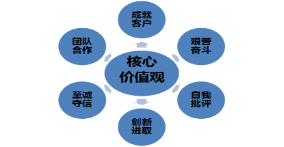

东泽节能技术（苏州）有限公司是一家专注于空压机节能驱动控制设备的创新型科技企业，开创了空压机行业第3种节能方式，公司总部位于我国经济最为活跃的长三角经济区-苏州，公司目前占地15000平米。 公司以“多一点节能，多一片蓝天”为理念，致力于空压机行业节能项目的研发创新，以提升民族工业为己任，励志打造全球颠覆型的空压机节能产品，使中国空压机行业迈入工业4.0时代。 东泽节能技术（苏州）有限公司通过ISO9001质量管理体系认证，38%的成员为研发中心人员，核心产品Mg2C系列空压机节能驱动一体机拥有2项国际专利，9项国家专利，15家国际战略合作伙伴，产品通过CCC、CE、FCC等多项认证，开创了空压机行业新品类产品。 东泽节能使用ERP、MES、CRM、OA等系统管理企业，扎根工业，并融合物联网，大数据，云计算等技术，在互联网+时代不断创新，是一家拥有自主产权，具有全球竞争力，极富科技创新性的高科技公司。
空压机第3种节能技术开创者
打造空压机节能控制第一品牌
节能产业报国
